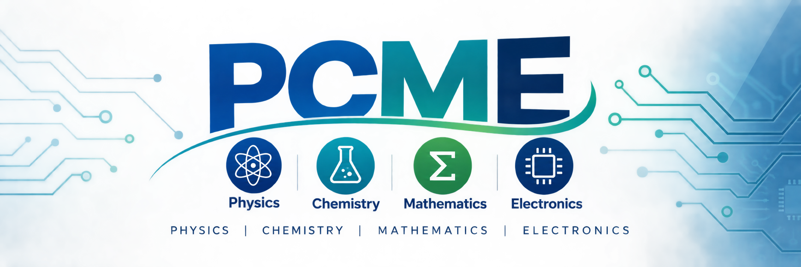
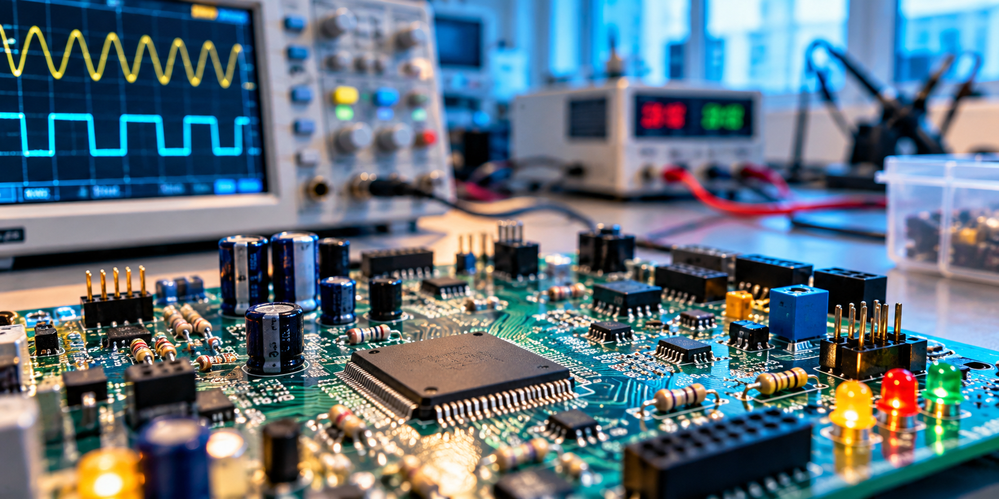
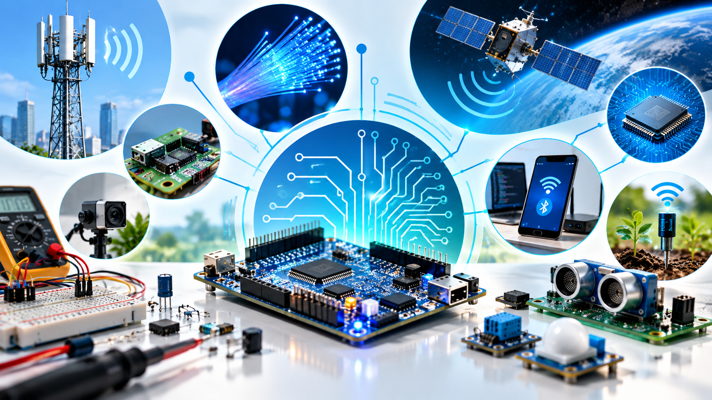
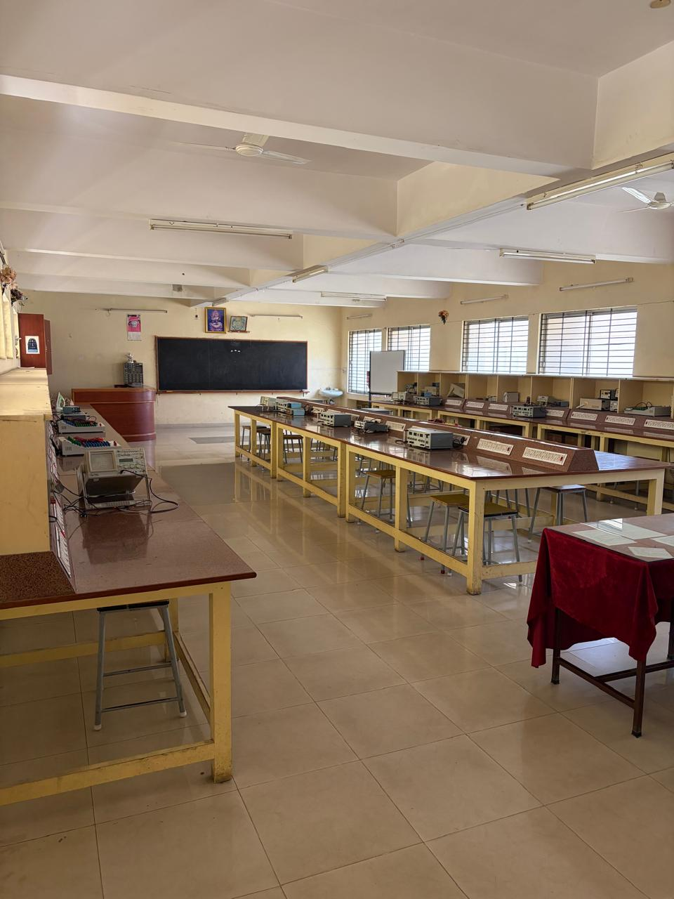
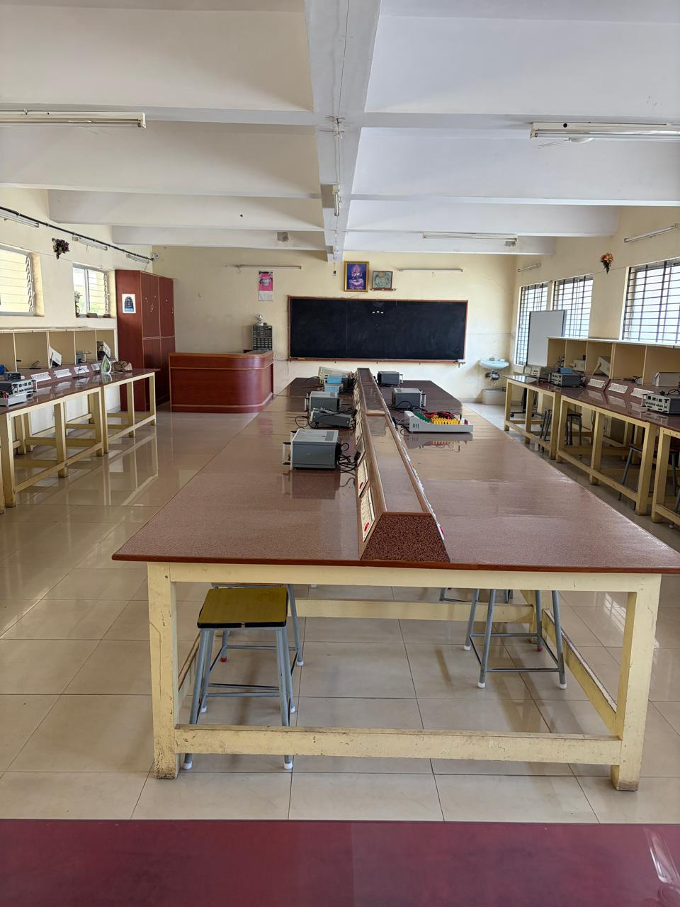
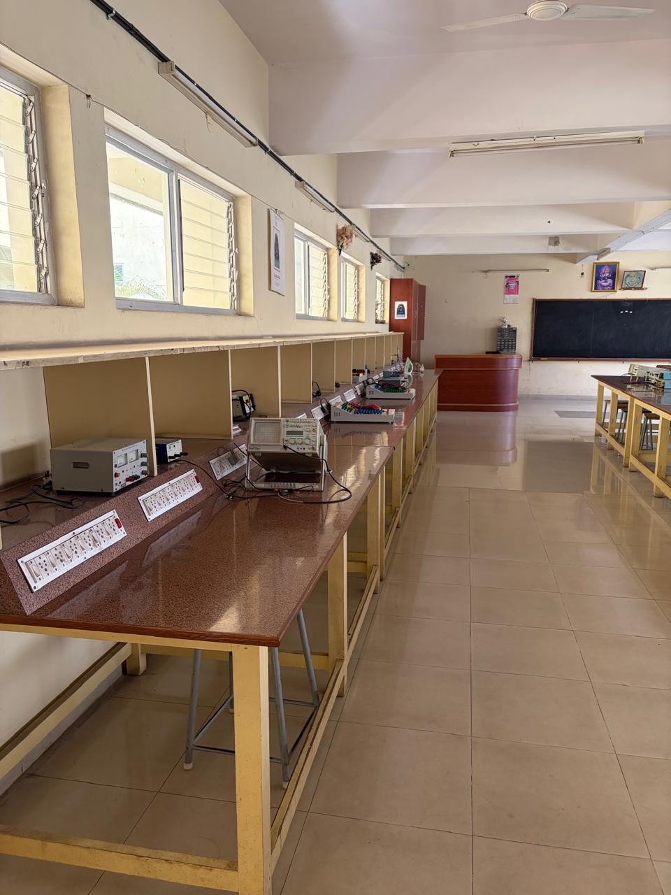
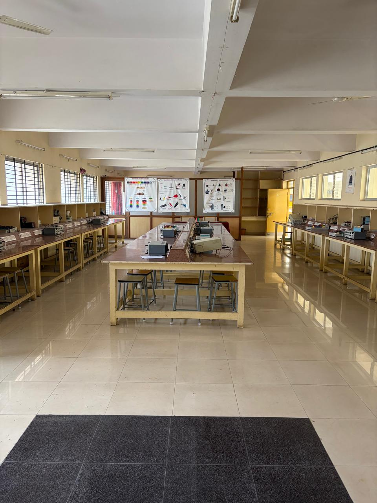
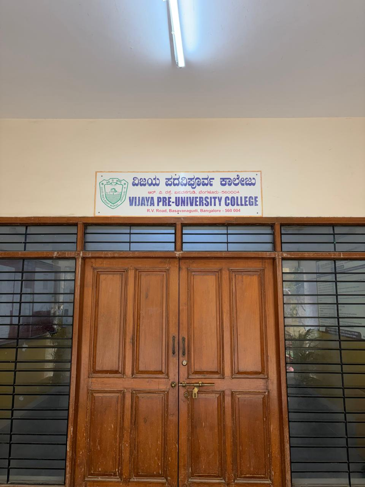
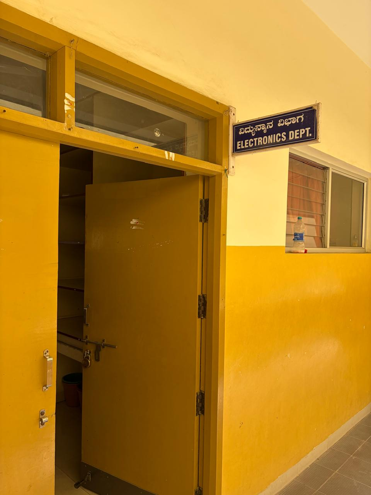
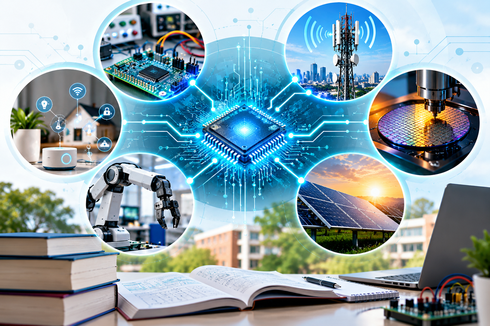

Physics
Understand energy, electricity, waves and the physical principles that explain the world around us.
Physics | Chemistry | Mathematics | Electronics
Explore Science. Discover Electronics. Build Your Future.
Interested in circuits, semiconductors and modern technology? Explore the PCME combination,
practical Electronics learning and opportunities for higher studies.
Four subjects. One strong foundation for exploring science, technology and future possibilities.

PCME stands for Physics, Chemistry, Mathematics and Electronics. The combination brings together fundamental sciences and mathematics with an introduction to electronics, circuits, digital systems and technology.
Understand energy, electricity, waves and the physical principles that explain the world around us.
Explore matter, materials and the chemical processes that shape everyday life and technology.
Develop logical reasoning, analytical thinking and problem-solving skills.
Discover electronic components, semiconductor devices, circuits and digital systems.
Build a strong foundation in Science and Mathematics while exploring Electronics and modern technology.
Build understanding through Physics, Chemistry and Mathematics, supported by scientific reasoning and analytical skills.
Learn how semiconductor devices, diodes, transistors and integrated circuits form the foundation of modern electronics.
Explore electronic components, measurements, circuits, rectifiers and logic gates through practical learning.
Discover how electronics connects with processors, communication systems, embedded technology, IoT and AI hardware.
Understand the electronic devices and circuits behind modern technology—from semiconductor components and transistors to integrated circuits, communication systems and microcontrollers.
The I PUC curriculum builds the foundation, while II PUC introduces more advanced electronic circuits, systems and applications.

Begin with electronic components, electrical measurements and circuits, then explore semiconductor devices, diodes, transistors and digital electronics.
Explore how transistors and electronic circuits are used in amplifiers, oscillators, communication systems, power electronics and microcontrollers, with an introduction to C programming.
Access the official Karnataka PUC Electronics textbooks and Learning By Activity (LBA) materials for I PUC and II PUC.
From the phone in your hand to the technology used in communication, healthcare, transportation and smart systems.

Modern phones combine processing, memory, sensors, displays and wireless communication in a compact device.
Wireless communication technologies connect devices and systems around us.
Electronics is used in sensing, control, communication and power-management systems in modern vehicles.
Electronic systems support measurement, monitoring and many types of medical equipment.
Sensors, electronics, control systems and computing come together in automated systems.
Sensors, controllers and communication technologies help devices interact with the world around them.
From tiny semiconductor devices to the technologies that connect, compute, communicate and automate our world.
Semiconductor devices form the foundation of many electronic systems and are central to modern computing, communication and electronic devices.
Integrated circuits bring many electronic functions together on tiny chips. VLSI can be explored further through higher education and specialised study.
Electronics and computing can work together through controllers designed for specific functions in devices and systems.
The curriculum introduces wireless communication, AM/FM, mobile networks, Wi-Fi, Bluetooth, optical fibre, satellite communication and RADAR.
Sensors, microcontrollers, communication and software can work together to create connected and smart systems.
Power semiconductor devices and converters are used for controlling and converting electrical power.
Connect Electronics theory with practical experiments. Explore electronic components, measurement instruments, semiconductor devices and circuits while developing hands-on understanding and problem-solving skills.

The Electronics curriculum combines theoretical concepts with practical work. Students get opportunities to work with electronic components, measurement instruments, circuits and digital systems while developing practical understanding and problem-solving skills.
Explore our Electronics laboratory, including its workbenches and instruments, where practical activities help students connect classroom concepts with electronic circuits and measurements.



Discover how semiconductor devices, integrated circuits and advanced chips power the technologies we use every day—from computers and wireless communication to artificial intelligence.
Discover the materials and basic principles behind diodes, transistors and modern electronic devices.
PUC CONNECTIONSee how electronic components are combined on a small chip to perform useful functions.
BEYOND THE CLASSROOMExplore how very large numbers of components are integrated into modern semiconductor chips.
FUTURE EXPLORATIONLearn why semiconductor chips and electronic hardware are essential to modern AI computing.
FUTURE TECHNOLOGYUnderstand how wireless signals carry information between connected devices.
PUC CONNECTIONDiscover how sensors, controllers and communication connect physical devices to digital systems.
FUTURE TECHNOLOGYPCME builds a foundation in Physics, Chemistry, Mathematics and Electronics, opening up different possibilities for higher education based on students’ interests and eligibility.
PCME provides a foundation in Physics, Chemistry, Mathematics and Electronics. After PUC, students can explore different higher-education routes according to their interests, academic performance and applicable eligibility requirements.
Explore engineering programmes in electronics, electrical systems, computing and other technology fields.
Continue your studies in science disciplines such as Physics, Mathematics and related fields, subject to course requirements.
Explore computing, computer applications, information technology and related programmes according to eligibility requirements.
Build on your interest in circuits, digital electronics, microcontrollers and embedded systems through further study.
Discover fields such as IoT, robotics, automation, semiconductor technology and chip design.
Eligibility, subject requirements and admission processes vary by programme, institution and academic year. Always check the applicable official admission requirements before making a course choice.

Vijaya Bifurcated PU College in Bengaluru offers Pre-University education with an emphasis on a strong academic foundation, discipline and preparation for higher education.
Through the PCME combination — Physics, Chemistry, Mathematics and Electronics — students can explore scientific concepts and build a foundation for further study in science, engineering and technology-related fields.
Explore Electronics through concepts, practical observation, measurements, circuit activities and experiments. Discover how electronic components and systems connect classroom learning with modern technology.

Discover how Science, Mathematics and Electronics connect with the technologies shaping our world.

Components, circuits, digital electronics and microcontrollers can provide a foundation for further study in embedded and electronic systems.
Embedded • Microcontrollers • Digital ElectronicsWireless communication, mobile networks, Wi-Fi, Bluetooth and optical communication can be explored through higher education and specialised learning.
Wireless • Mobile • Optical • Communication SystemsSemiconductor concepts, transistors and ICs provide a foundation for further exploration of chip technology, VLSI and semiconductor systems.
Semiconductor • IC Design • VLSI • Chip TechnologyMathematics, logical thinking, digital concepts and programming can connect with further study in computing, software and IT-related areas.
Computing • Programming • Software • ITSensors, electronics, microcontrollers, communication and programming can come together in connected and automated systems.
IoT • Robotics • Automation • Smart SystemsPower semiconductor devices and conversion concepts can lead to further study in power electronics, control and energy-related technology.
Power Electronics • Control • Energy TechnologyTwo subject combinations. Different areas of emphasis. Understand what you will study and consider your interests and future plans.
Includes Electronics as the fourth subject, providing structured exposure to electronic components, circuits, digital electronics, communication, microcontrollers and practical electronics.
Includes Computer Science as the fourth subject, providing an academic emphasis on computing and computer-related learning.
There is no single subject combination that is right for every student. Consider the subjects you enjoy, the type of learning you prefer and the requirements of the higher-education programmes you may wish to pursue.
Clear, practical answers for students and parents exploring PCME and Electronics.
PCME stands for Physics, Chemistry, Mathematics and Electronics. It combines the core science subjects with Electronics, giving students an opportunity to understand both scientific concepts and electronic systems.
The Electronics curriculum introduces students to electronic components, semiconductor devices, digital electronics, measurement instruments, circuits, communication systems, microcontrollers and practical electronics. The I PUC and II PUC curriculum progressively builds these concepts.
No. Electronics combines concepts with practical learning. Students work with components, instruments, circuits and electronic systems and perform practical experiments as part of the curriculum.
PCME can provide a foundation for higher studies in areas such as Electronics, Electrical and Electronics, Engineering, Computer-related fields, Physics, Mathematics, Communication, Embedded Systems and other technology-related programmes, depending on the student's interests and the eligibility requirements of the programme.
Both combinations can lead to technology-related higher studies. PCME gives students exposure to Electronics and electronic systems, while PCMCs gives greater emphasis to Computer Science. The better choice depends on the student's interests, strengths and intended higher-study pathway.
For current admission procedures, eligibility, fee details and other institutional information, students and parents should refer to the college's official information or contact the college directly through the enquiry facility provided on this website.
PCME may be a good option for students who enjoy Science and Mathematics and are interested in understanding electronic devices, circuits, digital systems and technology. Students should also consider their interests and the requirements of the higher-study programmes they may wish to pursue.
Yes. The Electronics curriculum includes practical work involving measurement instruments, electronic components, circuits, semiconductor devices, digital logic and other experiments. Practical learning helps students connect classroom concepts with real electronic systems.
Explore the combination, understand Electronics and speak with the college about admission-related information.
Students and parents can enquire about admission, eligibility, subject combination, current fee details and other college information.